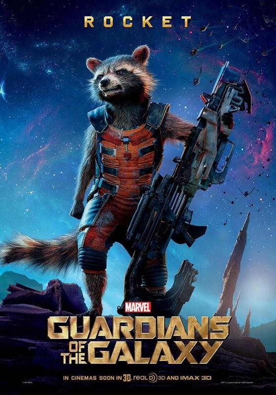

가디언즈 오브 갤럭시, 2014 (Guardians of the Galaxy)
잼나다고 주변에서 추천은 많이 받았는데
이제서야 보게되었습니다 :)
로켓 최고야 ㅋㅋㅋㅋㅋㅋㅋㅋㅋ
보는 내내 '미친너구리' 란 단어가 계속 생각나더라구요
목소리가 브래들리 쿠퍼였군요 ㅋㅋㅋㅋㅋㅋㅋㅋㅋ 캐릭터 정말 최고임

가디언즈 오브 갤럭시, 2014 (Guardians of the Galaxy)